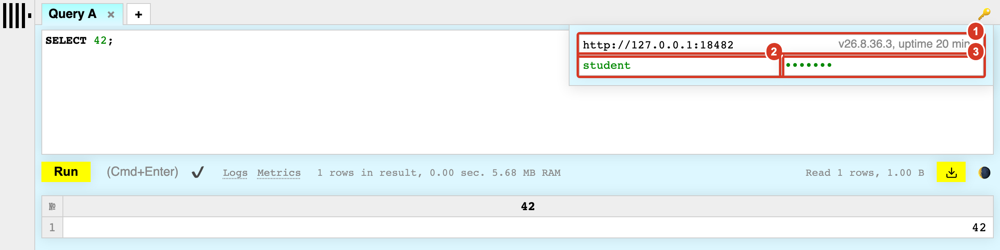
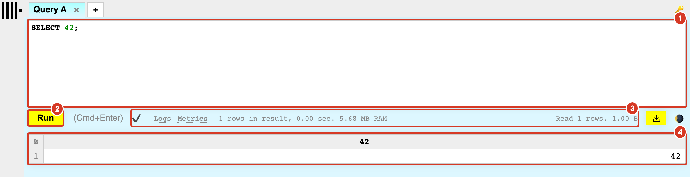
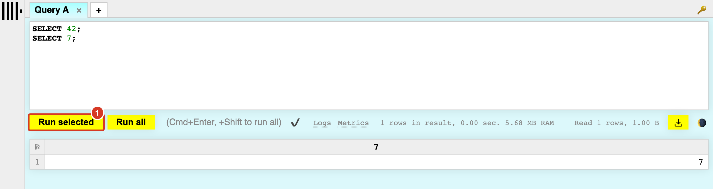
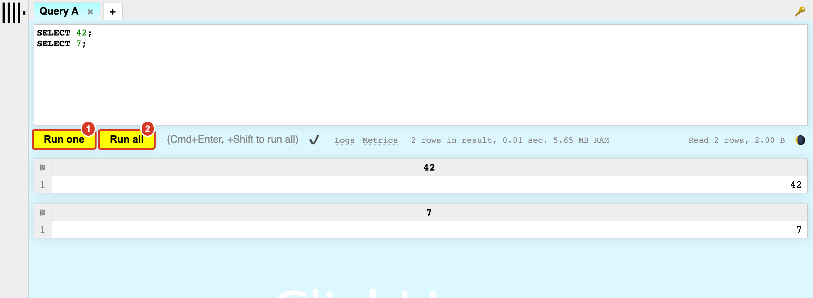
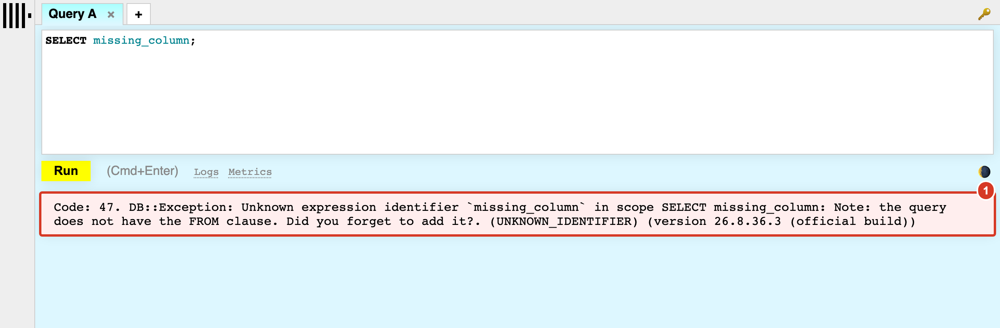
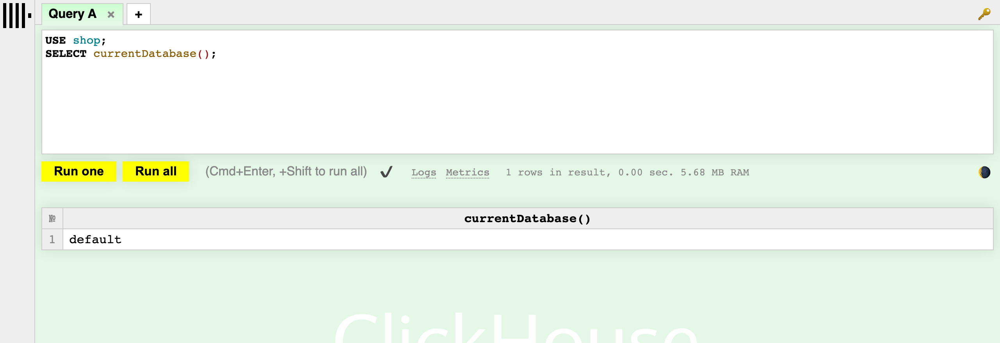
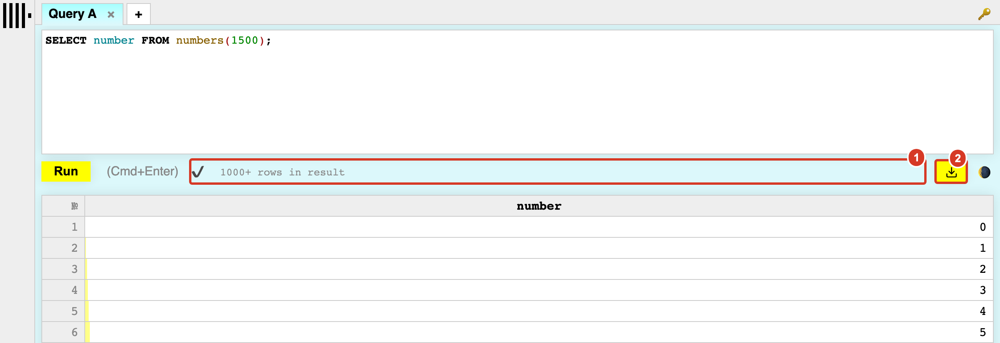
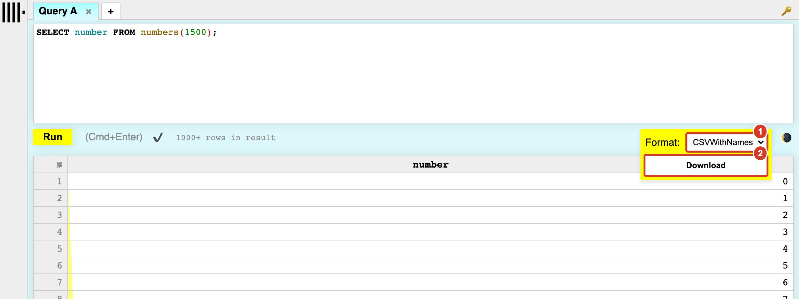

Справочник по ClickHouse · модуль 0 · рабочее место
Глава 0.2
Клиенты:
Play UI и clickhouse-client
Сервер уже запущен. Теперь отправим ему один запрос из браузера и из терминала, проверим ответ и сохраним результат в файл.
- Категория
- Работа с клиентами
- Уровень
- Первое знакомство
- Понадобится
- работающий стенд из главы 0.1
- Проверено
- ClickHouse 26.8.36.3, пользователь student
§1Кто выполняет запрос
Нужно проверить, что запрос дошёл до работающего сервера и ответ вернулся обратно. Клиент — программа, через которую мы отправляем запрос и читаем ответ. Запрос — инструкция серверу на SQL, языке работы с данными. В этой главе достаточно одной инструкции: SELECT 42; просит вернуть число 42. Слово SELECT задаёт получение результата, а точка с запятой обозначает конец инструкции.
Посмотрим на весь путь: где находится набранный текст, кто его выполняет и что возвращается при успехе или ошибке.
или clickhouse-client в терминале
Возвращает данные либо ошибку.
Пока текст находится только в редакторе, он ещё не передан серверу. После отправки клиент получает ответ и оформляет его по-своему: Play UI строит таблицу на странице, а clickhouse-client печатает её в терминале. Вид таблицы может различаться, хотя значение в ней одно.
По-простому: заявка в копировальный центр
Заявку можно отправить через сайт или передать сотруднику у стойки. Каналы разные, но работу выполняет тот же центр. В нашей схеме сайт и стойка соответствуют клиентам, текст заявки — SQL, центр — сервер, выданные листы — результат.
Граница аналогии: в программе ответ может быть показан лишь частично. У выдачи готовых листов такого ограничения нет.
§2Первый ответ в Play UI
Зачем этот шагПолучить короткий ответ, в котором легко проверить каждое значение.
Play UI — встроенный браузерный клиент ClickHouse. Откройте http://localhost:8123/play. Если в главе 0.1 вы меняли порт HTTP (протокола обмена данными браузера с сервером), используйте свой порт вместо 8123.
Параметры подключения находятся в полях над редактором. Если поля скрыты, откройте их кнопкой с ключом справа сверху. В поле адреса должен быть адрес вашего сервера, в полях user и password — student и student. После ввода щёлкните вне панели, чтобы закрыть её.

В большом поле редактора замените текст на запрос ниже. Нажмите Run.
SELECT 42;

В таблице заголовок столбца тоже называется 42: мы не задавали отдельное имя. Под заголовком находится одна строка со значением 42. Номер строки слева добавлен Play UI для навигации.
в таблице одна строка со значением 42, а над ней указано 1 rows in result. Теперь сравним этот ответ с выводом в терминале.
§3Тот же запрос в clickhouse-client
Зачем этот шагОтделить результат запроса от способа его показа.
clickhouse-client — клиент для терминала. Откройте терминал в папке clickhouse-practice, где находится compose.yaml. Команда запуска уже встречалась в главе 0.1:
docker compose exec clickhouse clickhouse-client
Здесь docker compose exec запускает программу в уже работающем сервисе, clickhouse — имя сервиса, а clickhouse-client — программа. Новый сервер эта команда не создаёт. Настройка стенда подставляет учётные данные student.
Дождитесь приглашения вида course :). Оно означает, что клиент готов к вводу SQL. Введите тот же SELECT 42; и нажмите Enter.
SELECT 42 ┌─42─┐ 1. │ 42 │ └────┘ 1 row in set. Elapsed: 0.002 sec.
Таблица теперь текстовая, но содержит то же значение. 1 row in set — одна строка результата. Elapsed — время выполнения, которое сообщает клиент; у вас оно будет другим. Это не сравнение скорости клиентов.
вернулось 42 и снова появилось приглашение для следующего запроса.
ОС — операционная система вашего компьютера. В этой главе понадобятся два места ввода:
| Где вводить | Что вводить |
|---|---|
| Терминал ОС, до запуска клиента | Команды docker compose … |
Приглашение course :) внутри клиента | SQL-запросы |
Чтобы вернуться в терминал ОС, введите exit; и нажмите Enter. Закрытие клиента оставляет сервер работающим. Теперь проверим, как отправлять SQL в несколько строк.
§4Когда ввод превращается в запрос
Перенос строки и отправка — разные действия. В Play UI Enter только переносит строку; отправляет кнопка Run. В интерактивном режиме без дополнительных флагов clickhouse-client короткий запрос отправляется по Enter, даже без ;. Поэтому текст из книги не стоит вручную вводить туда построчно без подготовки.
Многострочный ввод в терминале
Выйдите из клиента и запустите его с -m. Этот флаг включает многострочный режим: переносы остаются частью ввода, а законченный запрос отправляется после ; и Enter.
docker compose exec clickhouse clickhouse-client -m
Для опыта разделите наш запрос на две строки. После первой нажмите Enter, но не вставляйте сразу весь блок:
SELECT 42;
После строки SELECT ответа ещё нет. После 42; и Enter появляется одна таблица со значением 42. Перенос не создал второй запрос.
Это правило относится к ручному вводу в проверенной версии клиента. Вставка готового многострочного блока обрабатывается терминалом отдельно; не используйте её для опыта о поведении одиночного нажатия Enter.
Несколько запросов в Play UI
Теперь в Play UI запишите две самостоятельные инструкции. Число 7 нужно лишь для того, чтобы отличить второй ответ от первого:
SELECT 42; SELECT 7;
Появятся кнопки Run one и Run all. Поставьте текстовый курсор (место следующего ввода) во второй запрос и нажмите Run one: появится только ответ 7.

Затем нажмите Run all: клиент разделит текст по инструкциям и отправит их по очереди.

После Run all видны две таблицы: сначала 42, затем 7. Не путайте две таблицы по одной строке с одной таблицей из двух строк.
В интерактивном clickhouse-client этой версии строка SELECT 42; SELECT 7; тоже выполняется как две инструкции и печатает два ответа. Отправку нескольких инструкций организует клиент; это не один SQL-запрос, возвращающий две таблицы.
Горячие клавиши Play UI
Вместо Run / Run one — Ctrl + Enter, на macOS — Cmd + Enter. Для Run all добавьте Shift. Подсказка с сочетанием находится рядом с кнопками на кадре.
§5Результат, ошибка и статистика
С отправкой разобрались. Теперь отправим неверный запрос и посмотрим, как отличается ошибка от успешного ответа без строк.
missing_column — выдуманное имя, для которого в этом запросе нет значения. Сервер не сможет его определить:
SELECT missing_column;

В clickhouse-client та же причина находится в сообщении Received exception from server, за которым идут Code: 47 и UNKNOWN_IDENTIFIER. Подключение состоялось: сервер получил SQL и сообщил причину отказа.
После возврата к SELECT 42; ошибка исчезает и появляется таблица. Исправленный запрос нужно отправить заново.
Какие числа сравнивать
Вернитесь к кадру первого успешного запуска. Слева над таблицей Play UI пишет rows in result — число строк результата, справа — Read … rows, то есть сколько строк обработано при чтении. Это разные счётчики: при работе с таблицей сервер может прочитать много строк и вернуть мало. Подробные примеры будут в главе 1.1.
Рядом видны секунды и RAM — показатель использования оперативной памяти запросом. В clickhouse-client итог расположен после таблицы: rows in set, Elapsed, а для запросов с чтением — сведения Processed. Строка Query id — идентификатор конкретного запуска; по нему можно искать запрос при диагностике. Эти показатели описывают выполнение запроса. На результат также влияет контекст подключения — проверим его отдельно.
§6Почему контекст USE различается
Кроме текста SQL, на запрос влияет контекст — например, выбранная по умолчанию база. Команда USE shop; выбирает базу shop для текущего сеанса — работы в рамках одного подключения. Функция currentDatabase() возвращает имя выбранной базы. Устройство баз и имён таблиц разберём в главе 1.1; здесь проверим только, сохраняется ли выбор между отправками.
В Play UI отправьте через Run all:
USE shop; SELECT currentDatabase();

Play UI отправляет инструкции отдельными HTTP-запросами без общего SQL-сеанса. Поэтому один USE не задаёт базу для последующих отправок, в том числе внутри Run all. Результат default относится к чистому подключению, как в нашем опыте; при другом заранее выбранном контексте имя может быть другим.
В уже открытом clickhouse-client выполните эти же две инструкции последовательно. Там сохраняется соединение и контекст сеанса: второй ответ — shop. После выхода из клиента этот выбор не следует считать сохранённым для следующего запуска.
В одном сеансе clickhouse-client проверка возвращает shop, а в Play UI после одного USE — исходную базу подключения. Поэтому в примерах книги имя shop.products указывает базу явно и не зависит от предыдущего USE.
§7Ограничение числа строк на экране
Зачем этот шагНе сделать вывод о данных по обрезанному представлению.
Для опыта не нужна большая таблица. numbers(1500) создаёт при выполнении запроса 1500 строк: столбец number с числами от 0 до 1499. Это генератор строк, он ничего не записывает в базы. FROM указывает источник, из которого SELECT получает значения. Подробный синтаксис чтения оставим следующим главам.
SELECT number FROM numbers(1500);

В проверенной версии Play UI отображает первые 1000 строк и пишет 1000+ rows in result. Плюс означает, что ответ показан частично; точное число остальных строк здесь не указано. По этой надписи нельзя узнать размер исходной таблицы или утверждать, что сервер вернул ровно 1000 строк.
Здесь полный результат заранее известен по генератору: 1500 строк. На следующем шаге проверим их в файле. Для неизвестной таблицы одного просмотра недостаточно: размер результата зависит и от текста запроса.
В терминале тоже возможен сокращённый показ
Не делайте обратный вывод «в терминале всегда видны все строки». У табличного формата семейства Pretty тоже есть ограничение: в стенде output_format_pretty_max_rows по умолчанию равно 1000. Эта настройка ограничивает число напечатанных строк. Для получения полного файла выберем формат, у которого нет такого ограничения печати.
Вы видите 1000+, но ещё не считаете опыт завершённым: нужно получить и проверить оставшиеся 500 строк вне предпросмотра.
§8Экспорт без потери строк
Экспорт результата — сохранение строк ответа в файл. Файл содержит только ответ конкретного запроса. Для нашего опыта выберем CSVWithNames: значения записываются через запятую, а первая строка содержит названия столбцов.
Скачать через Play UI
Не меняя запрос с numbers(1500), нажмите значок стрелки вниз справа от строки статистики. В поле Format выберите CSVWithNames и нажмите Download.

Браузер получает файл result.csv (при повторном скачивании имя может получить суффикс). Для скачивания отправляется отдельное обращение к серверу за результатом выбранного запроса. В этой версии оно может использовать кеш результата — временно сохранённый ответ. Поэтому нельзя обещать, что скачивание всегда заново вычисляет запрос или обязательно отражает изменения данных после просмотра.
Сохранить через clickhouse-client
Для одного запроса необязательно входить в интерактивный сеанс. Флаг -q передаёт SQL в кавычках и завершает клиент после выполнения, -f выбирает формат ответа. В следующей команде -T отключает выделение терминала Docker, а знак > направляет вывод в файл на вашем компьютере.
docker compose exec -T clickhouse clickhouse-client -q "SELECT number FROM numbers(1500)" -f CSVWithNames > client-result.csv
Файл появится в текущей папке терминала ОС, не в контейнере. Команда ничего не печатает на экран при успехе, потому что данные направлены в файл. Это само по себе ещё не доказывает успех: сообщение об ошибке может остаться в терминале. Имя выбрано отдельно от браузерного result.csv; если файл client-result.csv уже существует, > перезапишет его.
Проверить оба файла
Откройте CSV в текстовом редакторе с нумерацией строк. Для нашего одностолбцового результата ожидаются:
"number" 0 1 … 1498 1499
В каждом файле 1500 строк данных и один заголовок, первая запись — 0, последняя — 1499. В опыте с одним числом на запись это 1501 непустая строка текста. Пустая строка, которую редактор может показывать после завершающего перевода строки, не является записью данных.
Выбор CSV не отменяет сам SQL: если запрос ограничивает результат или завершается ошибкой, экспорт не восстановит отброшенные данные. Проверка показала: ограничение просмотра Play UI не обрезало экспорт. Осталось выбрать подходящий способ работы для своей задачи.
§9Как выбрать клиент
Сопоставим действие и необходимые возможности клиента:
| Действие | Клиент и причина выбора |
|---|---|
| Посмотреть небольшой ответ и исправить SQL | Play UI: редактор и результат на одной странице. |
| Продолжить работу с выбранной через USE базой | Один сеанс clickhouse-client сохраняет контекст. |
| Скачать результат вручную | Play UI: выбор формата в меню Download. |
| Повторять сохранение командой | clickhouse-client с -q, -f и перенаправлением. |
Не нужно переносить запрос в другой клиент только из-за ошибки SQL: сервер обнаружит ту же причину. Переход имеет смысл, когда нужен другой способ ввода, контекст сеанса или выдача результата.
§10Частые ошибки
В терминале появился ответ раньше, чем дописан запрос
Проверьте, запускали ли клиент с -m. Если нет, выйдите и включите многострочный режим. Уже отправленный фрагмент продолжением не исправить: повторите запрос целиком. Порядок опыта — §4.
Run one вернул «не тот» ответ
Проверьте положение курсора: при нескольких инструкциях оно определяет выбранный запрос. Для двух ответов нужен Run all. Не добавляйте второй SELECT внутрь первого.
После USE работает в терминале, но не в Play UI
Сравните контекст через currentDatabase(). Для примеров с таблицами используйте явное имя с базой. Не повторяйте USE перед каждым запуском в надежде сохранить HTTP-сеанс — §6.
CSV создан, но нужных строк в нём нет
Проверьте ошибку в терминале, текущую папку и файл, который открыли. Затем сравните SQL с исходным: экспорт сохраняет результат указанного запроса. Если видели 1000+ в Play UI, получите файл через Download.
Нет подключения или неверен пароль
Убедитесь, что открыли свой адрес и порт, а пользователь указан как student. Если не отвечает и проверка из главы 0.1, сначала восстановите подключение по ней. Менять SQL при недоступном сервере бессмысленно.
§11Самопроверка и самостоятельная задача
Два SELECT дали две таблицы по одной строке. Над ними написано 2 rows in result. Получился один ответ с двумя строками?
Нет. При Run all это суммарное число строк разных результатов. У каждого SELECT своя таблица. Чтобы понять структуру ответа, нужно проверить границы каждой таблицы.
В Play UI видно 1000+, а CSV заканчивается числом 1499. Какие данные нужны, чтобы признать экспорт полным?
Нужно знать ожидаемый результат запроса. Для numbers(1500) это последовательность от 0 до 1499: проверяем 1500 записей, начало и конец. Одна последняя строка или размер файла в байтах не доказывают отсутствие пропусков.
После ошибки missing_column вы открыли clickhouse-client. Должен ли тот же SQL теперь сработать?
Нет. Сервер отклоняет запрос из-за неизвестного имени. Смена клиента не добавляет этому имени значение. Исправление нужно отправить серверу заново.
В clickhouse-client выполнили USE shop, вышли и запустили клиент снова. Можно ли полагаться на прежний выбор?
Нет: это новый сеанс. Проверяем currentDatabase() или указываем базу явно. История ввода и контекст соединения — не одно и то же.
Самостоятельно: проверить передачу полного ответа
Получите числа от 0 до 1249 с помощью numbers(1250). До запуска запишите, сколько строк ожидаете в результате и как отличите ограничение просмотра от потери данных. Затем:
- Выполните запрос в Play UI и зафиксируйте надпись над таблицей.
- Сохраните CSV через Play UI и через команду в терминале. Для команды выберите новое имя файла.
- Сравните количество записей, первую и последнюю записи двух файлов. Сформулируйте, какое ограничение обошёл экспорт.
Критерии проверки
Ожидаются 1250 записей данных, от 0 до 1249, и заголовок number в обоих CSV. Play UI показывает 1000+. Экспорт позволяет получить полный результат вместо ограниченного экранного представления. Текст SQL остаётся тем же. Для этого одностолбцового опыта проверьте также, что числа идут подряд без пропусков.
§12Шпаргалка
В браузере: http://localhost:8123/play · student / student.
Один запрос — Run; при нескольких — Run one под курсором или Run all.
В терминале ОС:
docker compose exec clickhouse clickhouse-client -m
Внутри клиента: закончить SQL — ; и Enter; вернуться в ОС — exit; и Enter.
Файл из ОС: docker compose exec -T clickhouse clickhouse-client -q "SQL" -f CSVWithNames > новое-имя.csv. Перед записью выберите несуществующее имя.
Глава пройдена, если вы получили одинаковый ответ в двух клиентах и нашли сообщение о неверном SQL. Полноту CSV вы можете подтвердить проверкой записей файла.